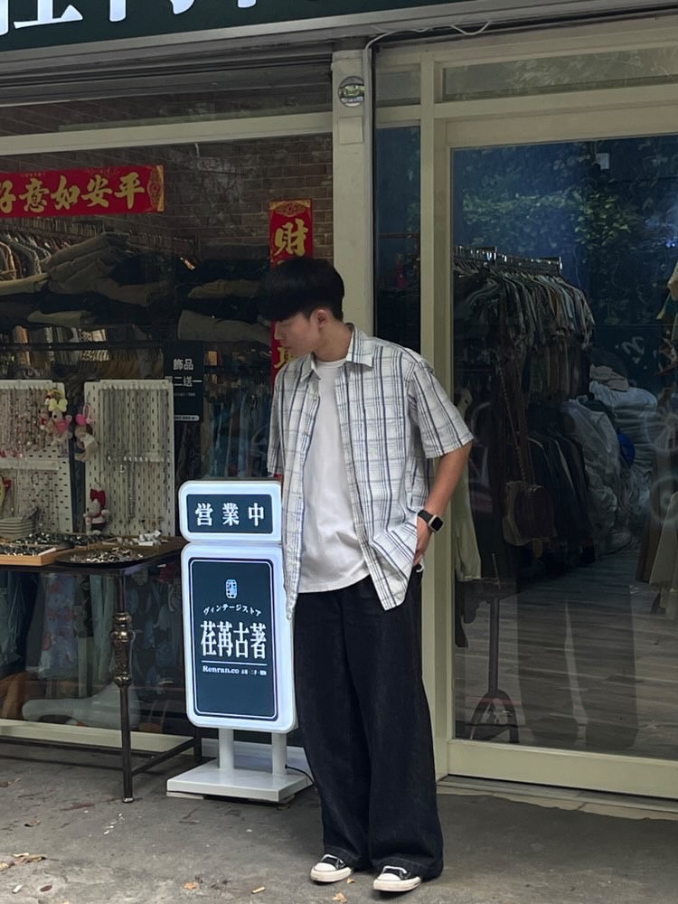

關於我
- 姓名: 羅世傑
- 生日: 2004年10月22日
- 星座: 天秤座
- 興趣愛好: 運動、聽音樂、交朋友
- 學校: 中原大學資訊管理學系
- 特質: 善良、脾氣好、喜歡幫助別人
個人名言
「Your appearance is extraordinary」聯繫方式


板橋凱薩大飯店(家宴中餐廳)——外場服務生
這是我的第一份的打工經驗，第一次遇到更多不一樣的人事物，讓我很不熟悉，但後面也慢慢習慣了裡面的環境，也覺得自己更成長了，經過裡面的洗禮之後，讓我去之後的環境，變得很獨立，比以往的自己更敢去處理事情，我覺得很幸運可以到這個環境裡面，算是慢慢的在接觸社會，而不是一直在學校中的團體裡面。
津菁炒飯——內場人員
這是一個我自己也沒有想到會做的打工，當初只是抱著想賺點零用錢而已，但發現進去後自己成長了很多，以前的我在家根本就不進廚房，但自從在炒飯店上班後，我反而要一直在鐵板前面一直炒飯，雖然累，但我覺得那一段時間自己改變了很多，而且重新體驗從無到有的那種感覺，身邊的店長也看著我成長，雖然只有在那邊兩個月，但很開心在別人的眼中是逐漸長大的。
KFC——內場人員
這份工作是從今年的8月開始，大一的時候因為待在球隊所以並沒有去打工，但後面因為自身因素所以跑去了打工，而在肯德基待了三個月的我，發現這一家公司為何可以在各個世界的角落站穩市場，進去後了解到裡面內部的規劃，每一個的SOP都很有原則的，而且內部的分配也都很好。

排球校隊——自由球員
我的入學方式比較不同，我是用體保生的入學方式進來的，而我從小到大都是在排球校隊，大一的時候有報名到大專排球聯賽，所以有跟著學長們一起去比賽，雖然沒有什麼下場的機會，但在旁邊的我也學習到了很多經驗，但只可惜的是，目前因為個人的因素，所以先離開了球隊。
四系聯合烤肉——活動組
這是我上的大學的第一個活動，也可以說是從小到大第一個不是關於體育相關的活動，當參加這個活動後，我發現其實並不容易，因為一個禮拜可能要練習2-4天，而且做了平常不會做的事情，就是跳舞還有當主持人，我也是當了主持人後才發現，要想稿要在那麼多人面前講話，是真的不容易的事情，但到了現在，我並不後悔參加這個活動，參加這個活動後認識了很多有趣的人，認識了同系的學長姐或別系的，只能說讓我大學人生多了一個很不一樣回憶。
學校排球系際盃——亞軍
這一個比賽，是和同系的同學還有學長們一起報名的，雖然我有很多的比賽經驗，但很他們一起我才知道說，我要怎麼去當一個領導者等等，但這一次的比賽，也讓我們增加了一個屬於我們一起奮鬥的回憶，當下那種熱血的心情，雖然我們最後離冠軍僅差一步，但也開心和他們一起打到了冠亞軍賽。